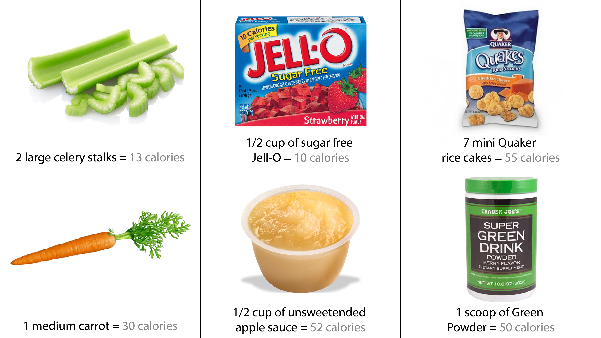

Zero Calorie Foods
(foods that burn belly fat fast without leaving you starving)
Hi, I'm David Alsieux, and I'm going to show you how to lose weight without eating less. Unlike everyone else, our focus will be on quality instead of quantity.
Most likely your diet over the years was not horrible and you've kept active. Yet you have weight that clings on and doesn't want to let go. Before you give up hope and convince yourself, "I'm just not the skinny type," let me teach you what actually works.
But first...
We will be AVOIDING ridiculous calorie counting tips that you see all over the web. For example...

Why do I say this is ridiculous? I used to think all of this looked pretty good.
But let's be honest.
You and I are not going to eat celery and carrot sticks everyday (personally I can't stand the taste). Sugar-free Jell-O might look appealing with only 10 calories and a decent selection of flavors.. only problem is this is NOT real food (sugar-free anything is also much worse for your body than the regular version). Apple sauce and rice cakes is another favorite, but I can guarantee you will start craving something else immediately after eating. That's because it's not providing you with the nutrition your body is craving. Now we come to the various Green Powder supplements that you see on the shelves in health food stores. I used to be addicted to these and would always add them to my smoothies (since it's hard for me to eat a salad consistently every day), until I discovered most of the ingredients are hybrid (like wheat grass, which comes from hybrid wheat)... meaning there are much better (non-hybrid) "green powders" that could be made that will take us to a level of health most never realize is possible.
Again, these absurd suggestions are what you're used to seeing from so-called "experts."
This is frustrating, because I believe most of us are willing to put in the work IF we know it's going to be worth it in the end. If you follow this old advice, then you're chances are 65% less likely to succeed. (ref.)
I've taught the people around me how to lose weight fast (all while keeping their energy high, and hunger low) - and I want to show you how you can do the same.
I've included 3 different scenarios with their own tactics to help you burn fat off quickly just by changing what you eat. Each of these tactics for losing weight has worked on a lot of people. Remember, you can take it at your own pace.
How much weight are you looking to lose? Choose your journey below...
"I need 10 pounds off of me RIGHT NOW"
2. Take the Slim Tea challenge
"I need 25 pounds over the next few months to disappear"
3. Substitute food with its non-hybrid equivalent
"I need to lose 50 or more pounds by this time next year"
I need 10 pounds off of me RIGHT NOW

Suggestion #1: Drink the RIGHT water
First off, if you're trying to lose weight then you have to help your body flush out the food you're eating. Without enough water your body is going to turn your (hybrid) meals into fat. You need to be drinking 3-4 litters (12-16 cups) of water per day.
Now if you're going to be drinking that much water, I imagine you're like me and would want to make sure it's the very BEST.
The trouble is not all water is created equal. Unless someone tells you, there's no way of knowing that it's not natural to drink a lot of water to then hear it SWOOSH around in your stomach or to feel bloated from it. This is a result of drinking UN-NATURAL water. Water that's missing minerals, which normally would be present, causes it to not absorb in our stomachs as easily.
So while getting a Reverse Osmosis machine to filter out the chlorine and the hard metals leached from water pipes can be very convenient, it's still "empty water." The same goes for distilled water... which is why people report chest pain after drinking it for months at a time. It is however alright to drink for a week or two as part of a detox, since "empty water" will act as a sponge and soak up any excess minerals in your body and flush them out.
The majority of "alkaline water" that's sold in bottles is artificially manipulated via a process called ionization or electrolysis, which "tricks" the water into thinking it has a certain pH, yet possesses none of the minerals that are responsible for the health benefits of naturally alkaline water. In nature, water flows down mountain streams and picks up alkaline minerals from the porous rocks. "Healing water" historically comes from the rain fall that flows down from volcanoes, since it possess one mineral in particular that other water doesn't... SULFUR.
If you want to be sure you're getting the very best water from nature, you should check out this website that keeps an updated list ranking the best companies by clicking here.
Quick tip: Take a large bottle of water with you to work so you can drink it throughout the day. Otherwise, "out of sight, out of mind."
Suggestion #2: Take the Slim Tea Challenge
What you drink is the most important thing to help you lose weight quickly as stated above since it helps to flush out solid food. Water is great, juice from fruit and leaves is also great to feed your body instantly (since solid food takes time to digest in the stomach, rather than a liquid absorbed through the tongue then taken directly to the bloodstream for that instant BOOST of energy people describe), but there's one thing EVEN better.
Tea that comes from the best roots and barks!
This will be like putting your weight loss goals on STEROIDS. These parts of a plant contain far more nutrients for our bodies that we can benefit from than the traditional green, black, and white tea leaves. To prove this, I've selected for you the best herbs to make a tea from so you can see for yourself. Just click on the image below and enter your name and email to instantly receive a downloadable step-by-step guide:
Sample Preview:
Quick Tip: add key lime to the tea to increase the absorption and benefits from the herb.
I need 25 pounds over the next few months to disappear
Suggestion #3: Substitute food with its Non-Hybrid equivalent
When you're hungry, you're going to grab whatever is nearest you. So if you stock up on healthy options beforehand you make it much easier for yourself. All food today has its ancient ancestor that it came from. That ancient ancestor is what you want to be eating instead, as it has a lot more minerals, meaning your body will fully break it down and absorb it.. meaning it won't be left behind and turn to fat. Can you remember the last time you had to go to the bathroom and were able to recognize a piece of food that came out of you still whole. That means your body wasn't able to process it. If you're lucky, this bad food will come out of you, but most of the time it sticks to your insides. This is the weight you've been trying to lose over the years, but just couldn't. If you know what a colonoscopy is, then you know what I'm talking about. Take a moment now to google pictures of a healthy colon (click here) and compare that to the colon of someone with disease (click here). You'll notice the difference is like night and day.
To help you find the best food options for you to substitute with, you need my Non-Hybrid Grocery List, which you receive in the 2nd email after signing up for the Slim Tea Challenge. Just click on the image below:
Sample Preview:

I need to lose 50 or more pounds by this time next year
Suggestion #4: Take Herbs Daily
If you want to really take your health and body weight seriously, then the next level for you is to "supplement" with herbs. Unlike artificial supplements, herbs come directly from nature meaning they're more complex than what man is able to duplicate, providing you with the best possible effects. Herbs will absorb completely into your body, unlike a vitamin C pill... that you end up peeing out, wasting your time and money. In all honestly, there's just two categories of herbs that you need to know. Herbs you can take everyday... and herbs you can only take for a temporary period for a detox.
To download my list of which non-hybrid herbs you need to be focusing on (which are the best I've discovered after years of research that you won't find anywhere else), just enter your name and email by clicking on the image below and you'll receive this in the 3rd email after signing up:
Sample Preview:

Here are the websites I use to purchase these herbs from:
3. TropiLab
Suggestion #5: Take a Spagyric Daily
This is the highest level of health you can possibly achieve. You see, the best possible herb is only so good in its natural state. What you really need to do is extract the whole herb into a liquid if you want that plant's full benefits. Below is listed in ascending order the best ways to "eat" vegetables (herbs).
1. Use a coffee grinder to make a powder from the dried herb, which you can add into smoothies as a boost - making your own "green powder" - or just place into a capsule.
Bonus: add mandarin juice and coconut water to boost absorption
2. Place the whole dried herb in hot water for 15 minutes to make a tea
Bonus: add key lime juice to boost the benefits
3. Place the whole dried herb in hot water overnight to make an infusion.
4. Vaporize the herb to inhale into your lungs (almost similar to breathing in the steam from tea or soup).
5. Tincture.. which is similar to an infusion except made from either grape alcohol or vegetable glycerin.
6. Spagyric.. a tincture is only step 1 out of 3 steps.
a. Ferment - extracts all water-soluble components (think of pure grape alcohol, no added sugar... and every time a person tried to tell you about its health benefits.. the same goes for apple cider vinegar and even fermented vegetables like sauerkraut. All of these are made by being submerged in water for a length of time.)
b. Distill - extracts all oil-soluble components, concentrating the nutrients by removing all the impurities
c. Burn - extracts all mineral salts (instead of throwing out the solid herb like you do when you make a tea or tincture, you can actually get more nutrition from the white ash that's been "purified through fire.")
It is very rare to find this being sold, but if you do a quick Google search you will find a few websites that do (click here).
Now you can help me out by using the buttons below to share this article. Thank you.